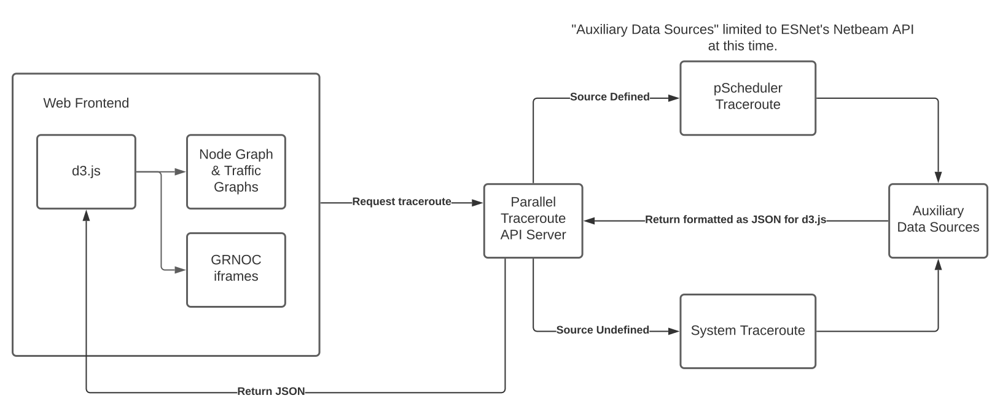

The parallel traceroute tool is designed to help accurately discover network paths and dependencies. It does this by running multiple traceroutes; in doing so, and differences in the path each of the traceroutes takes will be discovered. These differences can then be visualized for easy analysis of the network paths. As more traceroutes are run, a more accurate picture of the network topology is formed. In it's current state, the tool supports running traceroutes to any destination from either the server hosting the tool or a remote source server. To run remote traceroutes, the remote source must have a working pScheduler/perfSONAR instance. 
The tool is designed to be easy to use and easy to understand. As mentioned, the tool can run traceroutes locally using the default Linux traceroute implementation or remotely using pScheduler. The type of traceroute run is picked dynamically through the presence/absence of a source address. In other words, if a source address is not given, the system traceroute is used. If a source address is provided, the tool checks the source address for a pScheduler instance, and if one is found, a pScheduler traceroute is run. If no pScheduler instance is found at the source address, no traceroute is run. As a side note, the system traceroutes take ~10 seconds to run, while the pScheduler traceroutes take ~20-30 seconds.
Upon running a traceroute, a table will be generated with the traceroute information (i.e. type of traceroute, source, destination, and status). Subsequent runs will add on to the table, and by using the checkboxes on the right hand side of the table specific runs can be shown/run.
The visualisation is created using d3.js. By default, hops are clustered by their orgs. By double clicking on a cluster, it is expanded into the individual hops for the organization. The size of the clusters/hops is determined by the number of traceroutes that run through the specific point (i.e. a hop with 10 traceroutes running through it will appear larger than one with only 1 traceroute running through it).
If an expanded hop is hovered over and additional information is available (i.e. the hop is contained within one of the auxiliary data sources), a graph will appear showing traffic information for that hop. At this time, auxiliary data sources include ESNet's Netbeam API and some information from GRNOC's data collection. Graphs for GRNOC appear as embedded iframes which pull from GRNOC's Grafana instance, while graphs for ESNet's Netbeam API are dynamically generated using d3.js. The difference in displaying the information comes down to how we are able to access the information; with the Netbeam API, we have direct access to the information and can use that to generate our own graphs. In contrast, we have limited access to GRNOC's information and can only access their Grafana instance, and thus cannot create our own graphs from this data.